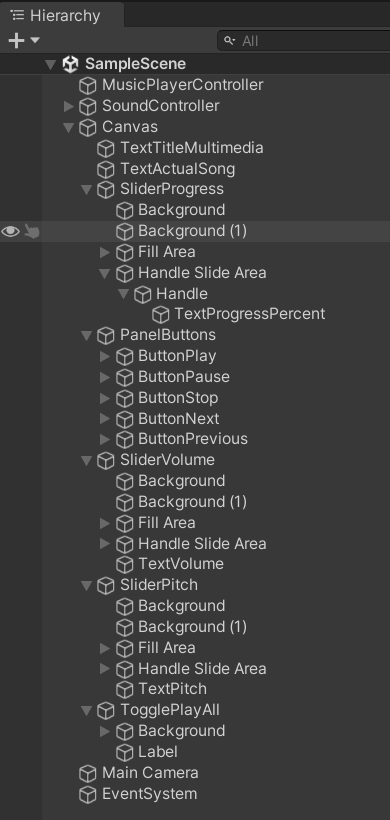
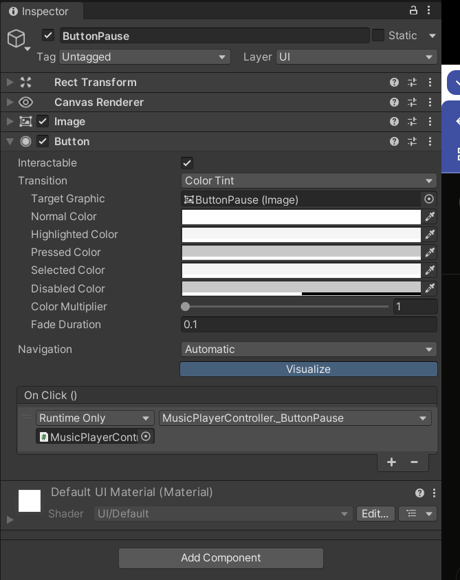
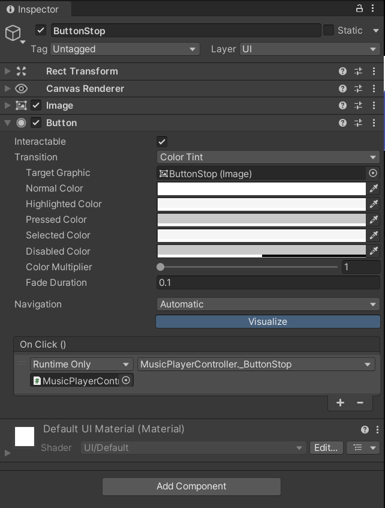
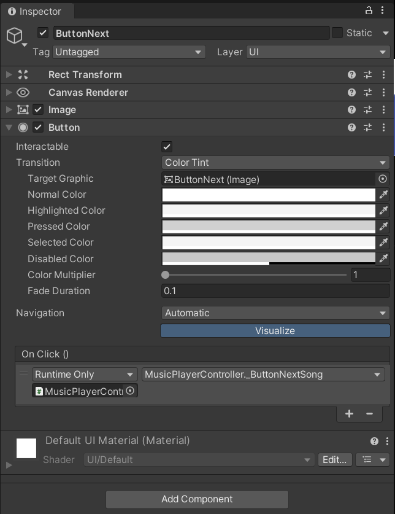
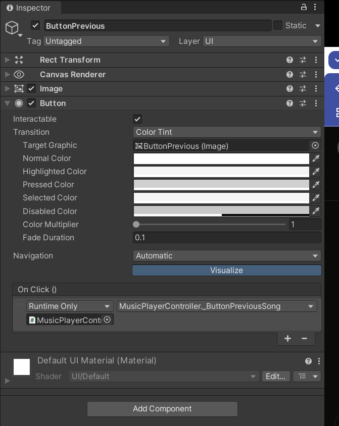
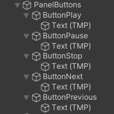

¡Bienvenido/a a este tutorial! Aprenderás a crear un reproductor de música funcional en Unity desde cero. Esta práctica está diseñada para estudiantes que están empezando con Unity y quieren familiarizarse con:
Al final de este tutorial, tendrás un reproductor como el que se muestra a continuación:
Nota: Este tutorial asume que tienes los assets necesarios (imágenes para los botones/fondos, archivos de audio .mp3, .wav u .ogg, y la fuente pixelada si deseas replicar el estilo exacto). Si no los tienes, puedes usar los elementos de UI estándar de Unity y cualquier archivo de audio.
MusicPlayerController. Este objeto contendrá nuestro script principal más adelante.
EventSystem en tu escena. Si no lo tienes, créalo haciendo clic derecho en la jerarquía -> `UI` -> `Event System`. Es esencial para que la UI funcione.
Tu jerarquía inicial debería tener al menos `Main Camera`, `MusicPlayerController` y `EventSystem`.
Canvas.
Canvas. En el Inspector, busca el componente `Canvas Scaler`.PanelButtons.
Tu jerarquía ahora debería parecerse un poco a esto (sin todos los elementos aún):
Recuerda que las imágenes (`inspector_*.png`, `hierarchy_*.png`, `ui_preview.png`) deben estar en una carpeta llamada `images` al mismo nivel que este archivo HTML para que se muestren.
Usaremos TextMeshPro para un mejor control visual del texto. Si no importaste los "TMP Essentials" antes, hazlo ahora (`Window` > `TextMeshPro` > `Import TMP Essential Resources`).
TextTitleMultimedia.
TextActualSong.
TextProgressPercent.
TextVolume y TextPitch.
Organiza estos elementos en el `Canvas` para que coincidan con el diseño de la imagen de previsualización.
SliderProgress.
Crearemos los botones dentro del PanelButtons que hicimos antes.
ButtonPlay.ButtonPause ("PAUSE").

ButtonStop ("STOP").

ButtonNext ("NEXT").

ButtonPrevious ("PREV").

Organiza los botones dentro de `PanelButtons`.
Estos sliders controlarán el volumen y el tono (pitch) del audio.
SliderVolume.SliderPitch.Este toggle permitirá activar/desactivar la reproducción continua (loop) de la lista de canciones.
TogglePlayAll.
Ahora crearemos el cerebro de nuestro reproductor. En lugar de copiar todo el código de golpe, lo construiremos paso a paso para entender mejor cada parte.
MusicPlayerController.Primero, necesitamos importar las herramientas (namespaces) que Unity nos da para trabajar con UI, TextMeshPro y eventos. También definiremos la clase e indicaremos que usaremos interfaces para detectar cuándo el usuario arrastra el slider de progreso.
Añade el siguiente código al inicio de tu archivo MusicPlayerController.cs:
using System.Collections;
using System.Collections.Generic;
using UnityEngine;
using UnityEngine.UI; // Necesario para Button, Slider, Toggle, etc.
using TMPro; // Necesario para TextMeshProUGUI
using UnityEngine.EventSystems; // Necesario para las interfaces de Drag and Drop (Arrastrar y Soltar)
// Añadimos las interfaces después de MonoBehaviour, separadas por comas.
// Esto le dice a Unity que nuestra clase SABE CÓMO manejar estos eventos.
public class MusicPlayerController : MonoBehaviour, IBeginDragHandler, IDragHandler, IEndDragHandler
{
// --- Aquí dentro irá el resto de nuestro código ---
} // Fin de la clase MusicPlayerController
Explicación:
using ...;: Importa funcionalidades predefinidas de Unity y C#.public class MusicPlayerController : MonoBehaviour: Define nuestra clase principal que hereda de `MonoBehaviour` (lo que permite adjuntarla a GameObjects en Unity)., IBeginDragHandler, IDragHandler, IEndDragHandler: Declara que esta clase implementará los métodos necesarios para responder cuando el usuario empiece a arrastrar (`OnBeginDrag`), continúe arrastrando (`OnDrag`) y suelte (`OnEndDrag`) un elemento UI (en nuestro caso, el `SliderProgress`).Necesitamos variables para guardar las referencias a los componentes `AudioSource` (los "reproductores" de sonido) y los `AudioClip` (los archivos de sonido).
Añade estas líneas dentro de las llaves `{}` de la clase `MusicPlayerController`:
// --- Elementos de Audio ---
[Header("Audio Sources")] // Ayuda a organizar en el Inspector
public AudioSource AS_Music; // Para reproducir la música principal
public AudioSource AS_HUD; // Para sonidos de UI (clics, etc.)
[Header("Audio Clips")]
public AudioClip AC_Button_OK; // Sonido para clic genérico
public AudioClip AC_Button_Stop; // Sonido específico para Stop
public AudioClip AC_Slider_Effect; // Sonido al mover slider (opcional)
public List<AudioClip> AC_Music; // Lista para guardar todas las canciones
Explicación:
public: Hace que estas variables sean visibles en el Inspector de Unity para que podamos arrastrar los componentes y archivos correspondientes.AudioSource: Tipo de componente que reproduce sonido.AudioClip: Tipo de archivo que contiene datos de sonido.List<AudioClip>: Una lista que puede contener múltiples `AudioClip` (nuestras canciones).[Header("...")]: Crea un título en el Inspector para mejor organización.Ahora, variables para guardar las referencias a todos los elementos de la interfaz (botones, textos, sliders, toggle) que creamos en la escena.
Añade estas líneas dentro de la clase, después de las variables de audio:
// --- Elementos de UI (Referencias desde el Inspector) ---
[Header("Elementos de UI")]
public Button ButtonPlay;
public Button ButtonPause;
public Button ButtonStop;
public Button ButtonNext;
public Button ButtonPrevious;
public TextMeshProUGUI TextActualSong; // Texto para el nombre de la canción
public TextMeshProUGUI TextProgressPercent; // Texto para el tiempo (0:00 / 3:15)
public TextMeshProUGUI TextVolume; // Opcional: para mostrar valor numérico
public TextMeshProUGUI TextPitch; // Opcional: para mostrar valor numérico
public TextMeshProUGUI TextTitleMultimedia; // Referencia si quieres cambiar el título
public Toggle TogglePlayAll; // El checkbox para repetir lista
public Slider SliderProgress; // Barra de progreso de la canción
public Slider SliderVolume; // Slider de volumen
public Slider SliderPitch; // Slider de pitch
Explicación:
Estas variables las usará el script para llevar la cuenta del estado actual (qué canción suena, si está reproduciendo, etc.). No necesitan ser `public` porque no las configuraremos desde el Inspector.
Añade estas líneas dentro de la clase, después de las variables de UI:
// --- Variables Internas ---
private int currentSongIndex = 0; // Índice de la canción actual en la lista AC_Music
private bool isPlaying = false; // ¿Está la música sonando ahora mismo?
private bool playAll = false; // ¿Está activado el modo "Play All" (loop de lista)?
private bool isDraggingProgressBar = false; // ¿Está el usuario arrastrando la barra de progreso?
Explicación:
private: Estas variables solo son accesibles desde dentro de este script.currentSongIndex: Guarda el número (posición) de la canción que está seleccionada o sonando.isPlaying: Un interruptor (verdadero/falso) para saber si `AS_Music.Play()` está activo.playAll: Guarda el estado del `TogglePlayAll`.isDraggingProgressBar: Importante para evitar que la barra se actualice automáticamente mientras el usuario la está moviendo manualmente.El método `Start()` se ejecuta automáticamente una sola vez cuando el juego (o la escena) empieza. Lo usamos para configurar el estado inicial del reproductor.
Añade este método completo dentro de la clase:
// --- Métodos de Unity ---
void Start()
{
// 1. Configurar la primera canción
if (AC_Music != null && AC_Music.Count > 0) // Comprobar si hay canciones
{
AS_Music.clip = AC_Music[currentSongIndex]; // Cargar el primer clip (índice 0) en el AudioSource
UpdateSongInfo(); // Actualizar el texto con nombre/número de canción (lo crearemos luego)
}
else
{
Debug.LogError("MusicPlayerController: ¡No hay canciones asignadas en la lista AC_Music!");
}
// 2. Sincronizar la UI con el estado inicial
UpdateButtonStates(); // Poner los botones Play/Pause/Stop en estado correcto (lo crearemos luego)
SliderVolume.value = AS_Music.volume; // Ajustar slider volumen al valor actual del AudioSource
SliderPitch.value = AS_Music.pitch; // Ajustar slider pitch al valor actual del AudioSource
TogglePlayAll.isOn = playAll; // Ajustar el toggle al valor inicial de playAll (false)
// 3. Conectar funciones a eventos de Sliders y Toggle POR CÓDIGO
// (Alternativa/complemento a hacerlo en el Inspector)
SliderVolume.onValueChanged.AddListener(OnSliderVolumeChanged); // Llama a OnSliderVolumeChanged cuando cambie
SliderPitch.onValueChanged.AddListener(OnSliderPitchChanged); // Llama a OnSliderPitchChanged cuando cambie
TogglePlayAll.onValueChanged.AddListener(OnTogglePlayAllChanged); // Llama a OnTogglePlayAllChanged cuando cambie
// 4. Asegurarse que el texto de progreso empiece en 00:00 / Duración
UpdateProgressUI(0, AS_Music.clip != null ? AS_Music.clip.length : 0); // Actualiza texto progreso (lo crearemos luego)
}
Explicación:
AddListener: Es una forma de decir "cuando este evento ocurra (ej: el valor del slider cambie), ejecuta esta función".El método `Update()` se ejecuta en cada fotograma del juego. Lo usaremos principalmente para actualizar la barra de progreso mientras la música suena y para detectar cuándo una canción termina.
Añade este método completo dentro de la clase:
void Update()
{
// Solo actualizamos si la música está sonando Y el usuario NO está arrastrando la barra
if (isPlaying && !isDraggingProgressBar && AS_Music.clip != null && AS_Music.clip.length > 0)
{
// Calcular progreso (tiempo actual / duración total) -> valor entre 0.0 y 1.0
float progress = AS_Music.time / AS_Music.clip.length;
SliderProgress.value = progress; // Actualizar la posición del slider
UpdateProgressUI(AS_Music.time, AS_Music.clip.length); // Actualizar el texto MM:SS / MM:SS
// Detectar fin de canción para pasar a la siguiente (si aplica)
// Comprobamos si el tiempo actual está muy cerca del final
if (!AS_Music.loop && AS_Music.time >= AS_Music.clip.length - 0.1f)
{
if (playAll) // Si está activado el repetir lista...
{
_ButtonNextSong(); // ...pasamos a la siguiente automáticamente
}
else // Si no...
{
_ButtonStop(); // ...simplemente paramos la reproducción
}
}
}
// Si no está sonando y no arrastramos, asegurar que el texto marca 0 al inicio
else if (!isPlaying && !isDraggingProgressBar)
{
if (AS_Music.time == 0) UpdateProgressUI(0, AS_Music.clip != null ? AS_Music.clip.length : 0);
}
}
Explicación:
Ahora crearemos las funciones públicas que se ejecutarán cuando hagamos clic en cada botón. Las llamamos desde el evento `OnClick` que configuraremos en el Inspector.
Añade estos métodos dentro de la clase:
// --- Funciones para los Botones (Llamadas desde el Inspector) ---
public void _ButtonPlay()
{
if (AC_Music == null || AC_Music.Count == 0) return; // No hacer nada si no hay canciones
AS_Music.Play(); // Inicia o reanuda la reproducción
isPlaying = true; // Marcar que está sonando
UpdateButtonStates(); // Actualizar estado botones Play/Pause/Stop
PlaySound(AC_Button_OK); // Reproducir sonido de clic (función auxiliar que haremos)
}
public void _ButtonPause()
{
AS_Music.Pause(); // Pausa la reproducción
isPlaying = false; // Marcar que NO está sonando
UpdateButtonStates(); // Actualizar botones
PlaySound(AC_Button_OK); // Sonido de clic
}
public void _ButtonStop()
{
AS_Music.Stop(); // Detiene la reproducción
isPlaying = false; // Marcar que NO está sonando
AS_Music.time = 0; // Rebobinar al principio (tiempo = 0)
SliderProgress.value = 0; // Poner el slider a 0
UpdateProgressUI(0, AS_Music.clip != null ? AS_Music.clip.length : 0); // Actualizar texto a 00:00
UpdateButtonStates(); // Actualizar botones
PlaySound(AC_Button_Stop); // Sonido específico de Stop
}
public void _ButtonNextSong()
{
if (AC_Music == null || AC_Music.Count <= 1) return; // No hacer nada si no hay canciones o solo 1
currentSongIndex = (currentSongIndex + 1) % AC_Music.Count; // Avanza índice y vuelve a 0 si llega al final
ChangeSong(); // Llama a la función que cambia la canción (la haremos luego)
PlaySound(AC_Button_OK);
}
public void _ButtonPreviousSong()
{
if (AC_Music == null || AC_Music.Count <= 1) return; // No hacer nada si no hay canciones o solo 1
currentSongIndex--; // Retrocede el índice
if (currentSongIndex < 0) // Si es menor que 0...
{
currentSongIndex = AC_Music.Count - 1; // ...va a la última canción de la lista
}
ChangeSong(); // Llama a la función que cambia la canción
PlaySound(AC_Button_OK);
}
Explicación:
Estas funciones se ejecutarán cuando el usuario mueva los sliders de Volumen/Pitch o cambie el estado del Toggle "Play All". Las conectamos en `Start()` usando `AddListener`, o también se pueden conectar en el Inspector.
Añade estos métodos dentro de la clase:
// --- Funciones para Sliders y Toggle (Llamadas desde Listener o Inspector) ---
// Se ejecuta cuando el valor del SliderVolume cambia
public void OnSliderVolumeChanged(float value)
{
AS_Music.volume = value; // Actualiza el volumen del AudioSource
// Opcional: Actualizar texto si tienes uno para mostrar el valor
if (TextVolume != null) TextVolume.text = $"VOLUME: {value:P0}"; // P0 formatea como porcentaje sin decimales
// PlaySound(AC_Slider_Effect); // Podrías poner un sonido aquí si quieres
}
// Se ejecuta cuando el valor del SliderPitch cambia
public void OnSliderPitchChanged(float value)
{
AS_Music.pitch = value; // Actualiza el pitch (velocidad/tono) del AudioSource
// Opcional: Actualizar texto
if (TextPitch != null) TextPitch.text = $"PITCH: {value:F2}x"; // F2 formatea como número con 2 decimales
// PlaySound(AC_Slider_Effect);
}
// Se ejecuta cuando el valor del SliderProgress cambia INTERACTIVAMENTE
// (Nota: Esta se conecta al OnValueChanged del SliderProgress en el Inspector)
public void OnSliderProgressValueChanged(float value)
{
// Solo actualizamos el TEXTO si el usuario está arrastrando
if (isDraggingProgressBar && AS_Music.clip != null)
{
float targetTime = value * AS_Music.clip.length; // Calcula a qué tiempo corresponde el valor del slider
UpdateProgressUI(targetTime, AS_Music.clip.length); // Actualiza el texto MM:SS
// ¡OJO! No cambiamos AS_Music.time aquí, eso lo hacemos SOLO cuando suelta el ratón (OnEndDrag)
}
}
// Se ejecuta cuando el estado del TogglePlayAll cambia
public void OnTogglePlayAllChanged(bool isOn) // Recibe el nuevo estado (true si está marcado)
{
playAll = isOn; // Actualiza nuestra variable interna
// OJO: AS_Music.loop = playAll; solo funcionaría bien si quisiéramos repetir LA MISMA canción.
// Para repetir la lista, gestionamos el cambio de canción en Update() cuando termina.
PlaySound(AC_Button_OK);
}
Explicación:
Estos son los métodos que necesitamos implementar por haber añadido `IBeginDragHandler`, `IDragHandler` y `IEndDragHandler` a la definición de la clase. Se llamarán automáticamente cuando el usuario interactúe con el `SliderProgress` (siempre que hayamos añadido un componente `Event Trigger` en el Inspector, como veremos en la sección 10).
Añade estos métodos dentro de la clase:
// --- Gestión Dragging Slider Progreso (Implementación Interfaces) ---
// Se llama UNA VEZ cuando el usuario EMPIEZA a arrastrar el objeto
public void OnBeginDrag(PointerEventData eventData)
{
// Comprobamos si el objeto que se empezó a arrastrar es nuestro SliderProgress
if (eventData.pointerDrag == SliderProgress.gameObject)
{
isDraggingProgressBar = true; // Marcamos que estamos arrastrando
// PlaySound(AC_Slider_Effect); // Sonido opcional al empezar
}
}
// Se llama CONTINUAMENTE mientras el usuario MANTIENE presionado y MUEVE el ratón
public void OnDrag(PointerEventData eventData)
{
// El propio Slider ya llama a OnSliderProgressValueChanged mientras arrastramos,
// así que ahí actualizamos la UI visualmente. Aquí podríamos hacer otras cosas si quisiéramos.
// Nos aseguramos de que el flag sigue activo por si acaso.
if (!isDraggingProgressBar && eventData.pointerDrag == SliderProgress.gameObject)
{
isDraggingProgressBar = true;
}
}
// Se llama UNA VEZ cuando el usuario SUELTA el botón del ratón
public void OnEndDrag(PointerEventData eventData)
{
// Comprobamos si estábamos arrastrando y si soltamos sobre el SliderProgress
if (isDraggingProgressBar && eventData.pointerPress == SliderProgress.gameObject)
{
isDraggingProgressBar = false; // Marcamos que ya NO estamos arrastrando
if (AS_Music.clip != null)
{
// ¡AHORA SÍ! Aplicamos el cambio de tiempo en la reproducción
AS_Music.time = SliderProgress.value * AS_Music.clip.length;
// Actualizamos el texto MM:SS por última vez tras soltar
UpdateProgressUI(AS_Music.time, AS_Music.clip.length);
}
// PlaySound(AC_Button_OK); // Sonido opcional al soltar
}
}
Explicación:
OnBeginDrag: Pone `isDraggingProgressBar` a `true` para que `Update()` deje de mover el slider automáticamente.OnDrag: No hace mucho aquí porque `OnSliderProgressValueChanged` ya se encarga de actualizar el texto mientras se arrastra.OnEndDrag: Pone `isDraggingProgressBar` a `false`. Lo más importante: calcula el tiempo (`AS_Music.time`) correspondiente a la posición final del slider (`SliderProgress.value`) y lo aplica, haciendo que la música salte a ese punto.PointerEventData eventData: Contiene información sobre el evento del ratón/puntero. Lo usamos para asegurarnos de que el evento ocurrió sobre nuestro slider.Finalmente, creamos unas funciones privadas que nos ayudan a organizar el código y evitar repeticiones. Estas funciones son llamadas desde otros métodos que ya hemos creado.
Añade estos métodos dentro de la clase:
// --- Métodos Auxiliares ---
// Cambia la canción actual en el AudioSource
void ChangeSong()
{
AS_Music.Stop(); // Para la canción anterior si estaba sonando
AS_Music.clip = AC_Music[currentSongIndex]; // Carga el nuevo AudioClip
UpdateSongInfo(); // Actualiza el texto del nombre de la canción
SliderProgress.value = 0; // Resetea el slider de progreso
UpdateProgressUI(0, AS_Music.clip != null ? AS_Music.clip.length : 0); // Resetea el texto de progreso
if (isPlaying) // Si el reproductor estaba en modo "Play" antes del cambio...
{
AS_Music.Play(); // ...inicia la nueva canción automáticamente
}
// Si no estaba en Play, no hacemos nada y se queda lista para darle al Play manualmente.
// En ambos casos, los botones se actualizarán porque Play/Stop llaman a UpdateButtonStates.
// Si quisiéramos asegurar actualización si NO estaba en Play: else { UpdateButtonStates(); }
}
// Actualiza el texto que muestra el nombre de la canción y su número
void UpdateSongInfo()
{
if (TextActualSong != null && AS_Music.clip != null && AC_Music.Count > 0)
{
// Usamos string interpolation ($"...") para construir el texto
TextActualSong.text = $"Playing: {AS_Music.clip.name} ({currentSongIndex + 1}/{AC_Music.Count})";
}
else if (TextActualSong != null)
{
TextActualSong.text = "No songs loaded"; // Mensaje si no hay canciones
}
}
// Habilita/deshabilita los botones Play/Pause/Stop según el estado
void UpdateButtonStates()
{
// Si no tenemos referencias a los botones, no hacer nada
if (ButtonPlay == null || ButtonPause == null || ButtonStop == null) return;
// El botón Play SÓLO debe estar activo si NO está sonando
ButtonPlay.interactable = !isPlaying;
// El botón Pause SÓLO debe estar activo si SÍ está sonando
ButtonPause.interactable = isPlaying;
// El botón Stop debe estar activo si está sonando O si está pausado pero no al inicio (tiempo > 0)
ButtonStop.interactable = isPlaying || AS_Music.time > 0.01f; // Pequeño margen por si acaso
// (Opcional) Habilitar/deshabilitar Next/Prev si solo hay una canción
bool canChangeTrack = AC_Music != null && AC_Music.Count > 1;
if(ButtonNext != null) ButtonNext.interactable = canChangeTrack;
if(ButtonPrevious != null) ButtonPrevious.interactable = canChangeTrack;
}
// Formatea y actualiza el texto del progreso (ej: "01:23 / 04:50")
void UpdateProgressUI(float currentTime, float totalTime)
{
if (TextProgressPercent != null)
{
// TimeSpan es útil para convertir segundos a formato MM:SS
System.TimeSpan current = System.TimeSpan.FromSeconds(currentTime);
System.TimeSpan total = System.TimeSpan.FromSeconds(totalTime);
// Formato "mm\:ss" asegura dos dígitos para minutos y segundos, con ':' literal
TextProgressPercent.text = $"{current:mm\\:ss} / {total:mm\\:ss}";
}
// Nota: La actualización del VALOR del slider se hace en Update() o OnEndDrag()
}
// Reproduce un sonido corto usando el AudioSource del HUD
void PlaySound(AudioClip clip)
{
if (AS_HUD != null && clip != null)
{
// PlayOneShot es ideal para efectos de sonido, no interrumpe otros sonidos en el mismo source
AS_HUD.PlayOneShot(clip);
}
}
// ¡Asegúrate de que esta llave cierra la clase MusicPlayerController!
}
Explicación:
ChangeSong: Contiene la lógica para detener la canción actual, cargar la nueva, actualizar la UI relacionada y opcionalmente empezar a reproducir la nueva.UpdateSongInfo: Actualiza el `TextActualSong` con el nombre del clip y el número de canción.UpdateButtonStates: Activa/desactiva los botones Play, Pause y Stop según tenga sentido (no puedes pausar si no está sonando, etc.). Usa la propiedad `interactable` de los botones.UpdateProgressUI: Toma los tiempos en segundos y los convierte a formato "minutos:segundos" para mostrarlos en `TextProgressPercent`.PlaySound: Una función simple para reproducir los efectos de sonido de la UI usando el `AS_HUD` y `PlayOneShot`.¡Felicidades! Si has seguido todos los pasos, ahora tienes el script MusicPlayerController.cs completo y, lo más importante, has visto cómo se construye cada parte y para qué sirve. Guarda el archivo.
El siguiente paso es volver a Unity, asignar este script al GameObject `MusicPlayerController` y conectar todas las referencias y eventos en el Inspector, como se describe en la sección 10.
Ahora es el momento de hacer que la UI interactúe con el script que acabamos de construir.
MusicPlayerController en la Jerarquía. Arrastra el script MusicPlayerController.cs desde la ventana Project hasta el Inspector de este GameObject.
Asegúrate de que TODAS las referencias de UI estén asignadas. Si falta alguna, tendrás errores de "Null Reference Exception" al ejecutar.
MusicPlayerController desde la Jerarquía al campo que dice "None (Object)".¡Ahora la interfaz gráfica sabe qué funciones llamar en nuestro script cuando interactuamos con ella!
Necesitamos configurar los AudioSource y asignar los clips de audio a nuestro script.
MusicPlayerController en la Jerarquía.NullReferenceException: Falta asignar una referencia en el Inspector (un botón, texto, slider, AudioSource o AudioClip en el `MusicPlayerController`). Revisa TODOS los campos públicos del script.¡Felicidades! Has construido un reproductor de música funcional en Unity, aprendiendo sobre UI, Audio y Scripting paso a paso.